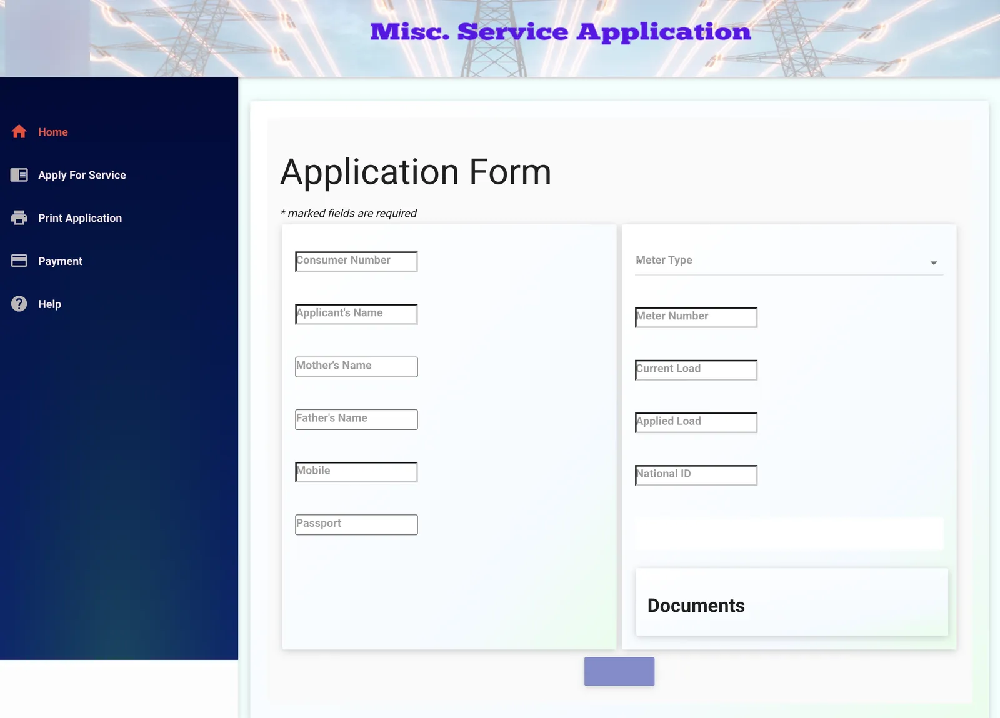
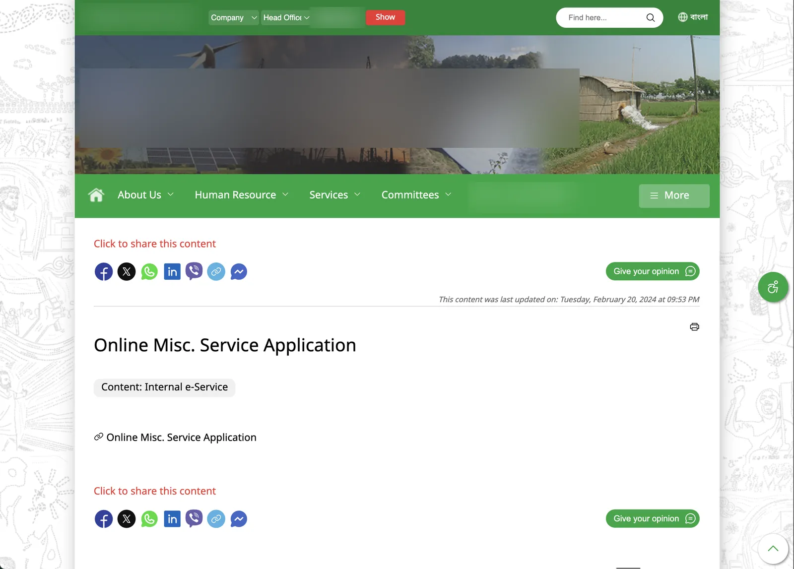
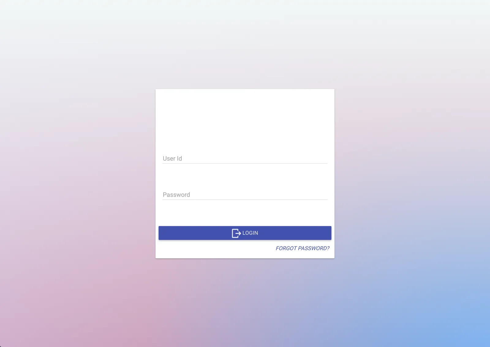
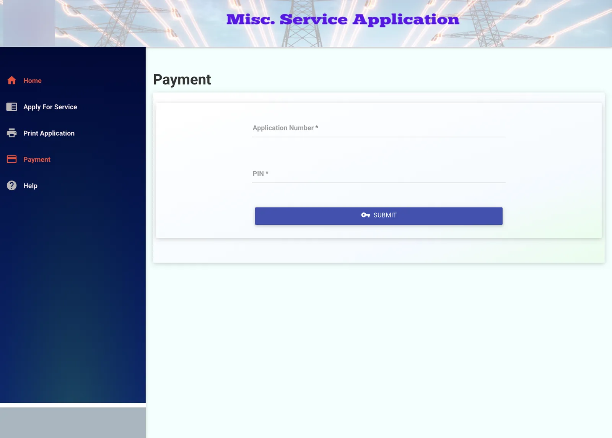

Now, and what it could be
| Now | What it could be: GridOps |
|---|---|
| An information website: notices, pages, forms | A working product for the people who run the grid and the people who pay for it |
| Services scattered and hard to find | Organised around the utility's real monthly cycle |
| Looks years old | Modern, clear, data-first |

NowGridOps · 8 h later


Can a proposal show the future working, instead of describing it?
A slide deck asks a client to imagine. A working prototype lets them click. With AI, a clickable product became cheaper to make than a polished deck, so the choice made itself.
Three tools, one judge
Research → Benchmark → Requirements → IA → Design → Validate → Prototype
- Research the current site: what it offers, what's missing, where it's outdated.
- Benchmark similar sites: how other utilities and service portals handle the same jobs.
- Evaluate the basic requirements: who uses it, and what they need to get done.
- Information architecture: organise everything around the monthly cycle, including the client's Dhaka operations.
- Design in Figma Make.
- Compare & validate with other AI tools: Google Stitch and ChatGPT as a second and third opinion.
- Finalise and make it functional: a working prototype, not static screens.
Three AI tools, each with a job. Make builds, Stitch and ChatGPT challenge it, and I decide.
What AI did, what I did
| AI-assisted tools | My contribution |
|---|---|
| Generated initial layouts and code scaffolding | Defined the product direction |
| Generated sample data | Structured requirements and information architecture |
| Suggested alternative layouts | Evaluated and selected design directions |
| Produced first-pass copy | Reviewed content and product logic |
| Accelerated implementation | Validated interactions and consistency |
What 8 hours doesn't cover: security, real integrations, an accessibility audit and usability testing. A pitch prototype proves the direction; the product still needs that work.
Two portals,
both working
The operations portal
Dashboard · consumers · meters
Key numbers per circle, a prioritised task queue, 5,000+ consumer records, and full meter history with the reason for every change.
Generate · approve · adjust
Bill runs per consumer group with live progress, then review and approve before anything reaches a customer.
Collect · reconcile
Payments by channel, and a reconciliation center that flags anything short, over or mismatched.
Every number has a target
Manager KPIs against target, a monthly trend, the payment-channel mix, and a filterable report generator.
The customer portal
The second portal is for customers: sign in with a consumer ID and pay electricity bills online, securely. Its screens sit behind the prototype's sign-in and aren't shown here.
Five decisions
that mattered
Organise by the real cycle
The navigation follows the month: consumers → meters → bills → payments → reports. A new staff member can learn the job from the sidebar.
Every number has a target
The dashboard answers "are we OK?", not just "what happened?"
Approve before money moves
Generated bills wait for review, so mistakes are caught before they reach consumers.
Reconciliation gets its own screen
Many payment channels mean mismatches, shown in plain words (short, over, matched) with one-click matching.
Built for their reality
Local currency, local payment channels, their zones and circles, and a language switch.
From "imagine this"
to "try this"
The client responded positively to the proposal. Final project approval and implementation are pending.
- Decision: approved, in review, or declined
- What the client said after trying the prototype
- What was reused from the prototype in the real build
AI moved the proposal from "imagine this" to "try this."
The speed is real, but it only helps if you understand the domain well enough to judge what the AI makes. Most of those eight hours went into researching, deciding and checking, not generating.